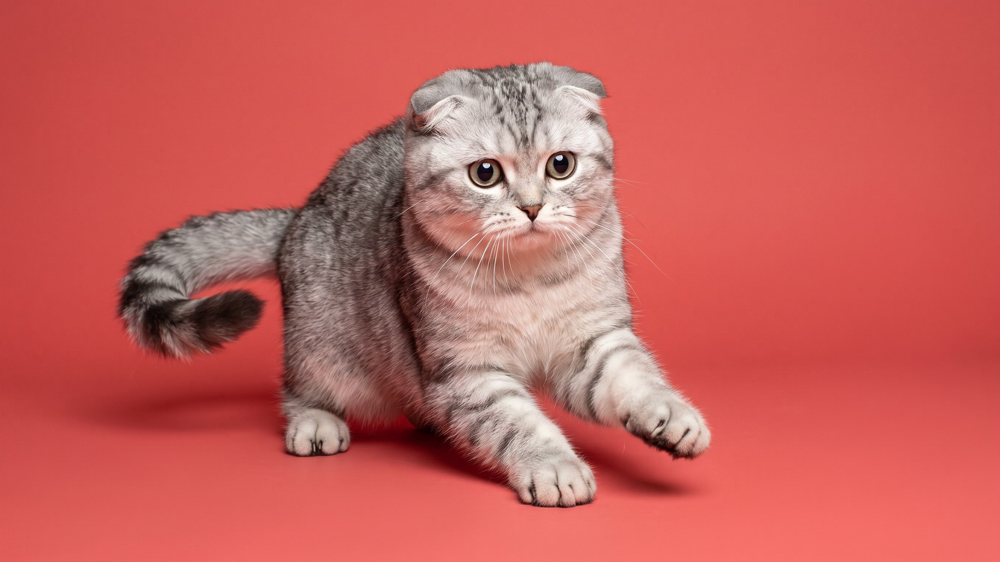

Дирхаунд вырастает выше 76 см в холке и весит до 50 кг, но дома ведёт себя тише большинства маленьких собак. У породы два режима: взрывной спринт на улице и несколько часов на боку дома. Если вы любите активные прогулки, цените спокойных собак в квартире и готовы к крупному питомцу, ниже полный портрет породы. Примерно 3 минуты чтения.
🐾 Ваш питомец — дирхаунд?
Заведите профиль в AnimaLife: приложение запомнит породу, возраст и вес и будет подсказывать по уходу именно для неё. Вопросы AI-ветеринару — круглосуточно и бесплатно.
Завести профиль → Завести в MAX →
У вас iPhone? AnimaLife есть в App Store
Дирхаунда называли «королевской собакой» шотландских горцев, но дома он держится тихо и без всякой строгости. С людьми деликатен, к детям терпелив, незнакомцев встречает без лая. Охранять не умеет и не хочет, зато как компаньон подходит отлично.
Дирхаунд создан гнать оленя коротким мощным броском, поэтому схема нагрузки у него особая. Нужно 2 выгула в день по 40–60 минут с возможностью побегать свободно. На поводке в городе ему скучно: хочется огороженный участок или поле, где можно разогнаться.
Вне прогулок дирхаунд проводит большую часть дня лёжа. По квартире не мечется и мебель не ломает, если получил свою пробежку. Щенку до 18 месяцев физическую нагрузку ограничивают: суставы крупных пород созревают медленно, и долгий бег по твёрдым поверхностям в этом возрасте вредит.
Шерсть у дирхаунда жёсткая, волнистая, похожа на грубую проволоку. Грязь отталкивает хорошо, почти не пахнет. Уход несложный:
Линька умеренная. Дирхаунд не засыпает диван шерстью, и хозяева с аллергией на пух это ценят.
Размер дирхаунда задаёт несколько практических условий.
Раз в год визит к ветеринару и плановые осмотры. Ветеринар, знакомый с борзыми и крупными породами, будет полезнее общего специалиста: у этой группы собак своя физиология.
Порода подходит людям с загородным домом или доступом к огороженной территории. Два полноценных выгула в день обязательны. Берут дирхаунда те, кто хочет спокойную собаку дома и азартного партнёра на пробежках.
Порода не подходит для очень маленьких квартир без лифта: 50 кг на лестнице требуют сил. Сторожевую или охранную функцию дирхаунд не выполняет. Кошек и мелких животных в доме стоит учитывать: борзой инстинкт непредсказуем даже у воспитанного взрослого дирхаунда.
🐾 У вас дирхаунд?
AnimaLife соберёт уход под породу: к каким болезням есть склонность, что проверять по возрасту, чем кормить и когда пора к врачу. Бесплатно, прямо в мессенджере.
Собрать план ухода → Собрать в MAX →
У вас iPhone? AnimaLife есть в App Store
🐾 Понравился разбор?
Подпишитесь на канал — каждый день разбираем по одному тревожному симптому у кошек и собак: что в пределах нормы, а когда пора к врачу. Подпишитесь, чтобы не пропустить разбор, который может спасти здоровье вашего питомца.
← Все статьи · Открыть AnimaLife в Telegram · RSS
Материал носит информационный характер и не заменяет очную консультацию ветеринара.